Le menu du titre sur la ville animee
Avant : l'animation n'occupait qu'un bandeau de 270 px en portrait, le reste etait une grande carte creme. Après : la ville sous la pluie remplit tout l'écran, le héros en garde se tient juste au-dessus du menu, et le menu est fait de plaques translucides posees dans la zone du pouce (bas en portrait, colonne de droite en paysage). Mêmes boutons, mêmes actions, mêmes cibles tactiles.
Avant (bandeau + grande carte)
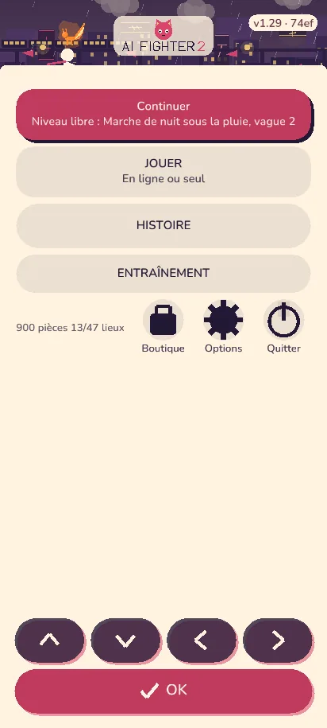
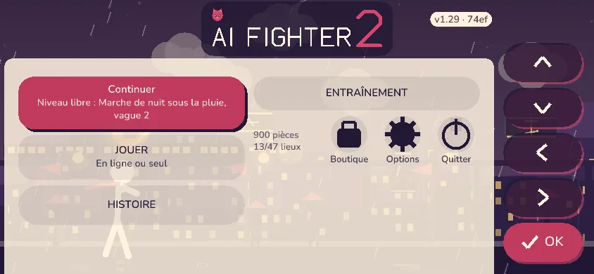
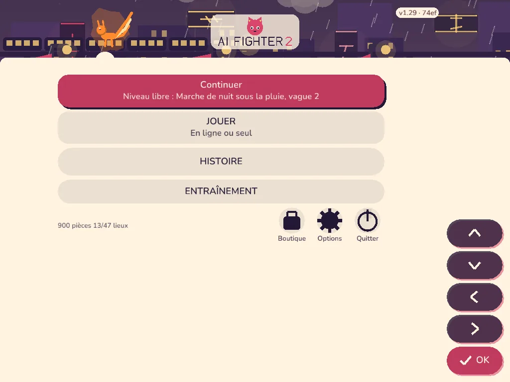
Variante A : plaques creme retenue
Chaque bouton est une plaque Papier a 90 % d'opacite (texte encre, contraste superieur a 12:1), bords arrondis, ombre portee, aplats sans flou. Le curseur clavier / manette = plaque pleine cerclee d'accent. Le plus proche de la charte actuelle.
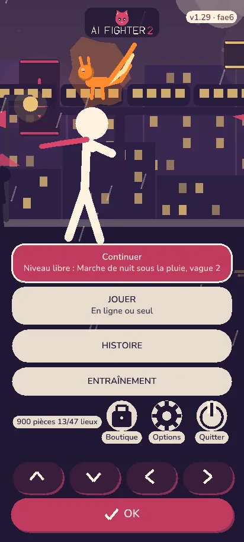
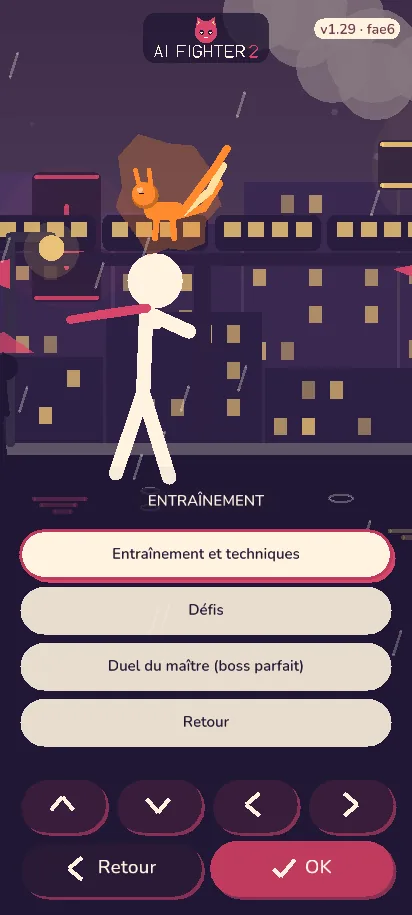
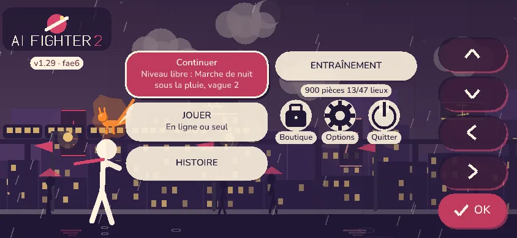
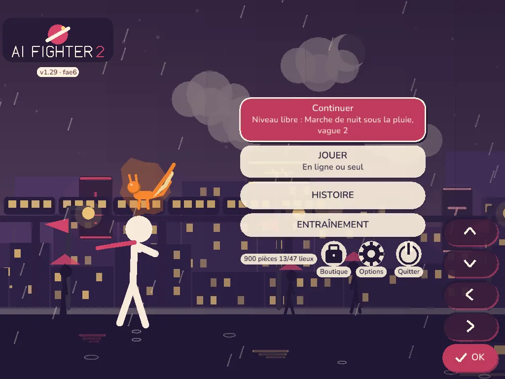
Variante B : verre sombre
Plaques d'encre a 78 % avec texte creme : l'animation reste plus presente (la ville se devine derrière chaque bouton), ambiance plus nocturne. Moins proche du papier creme de la charte.
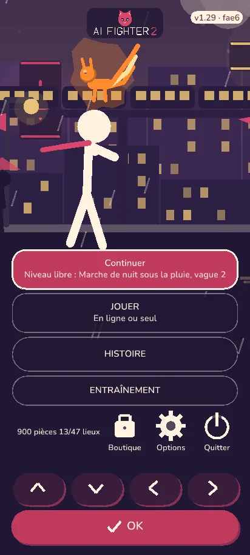
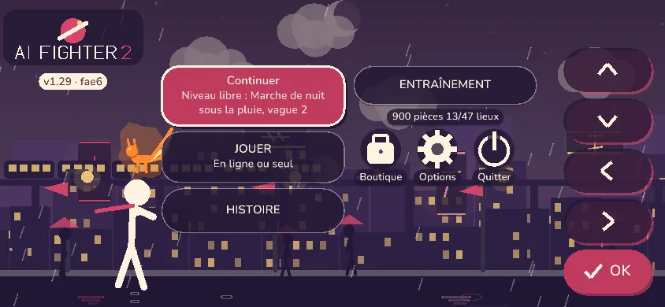
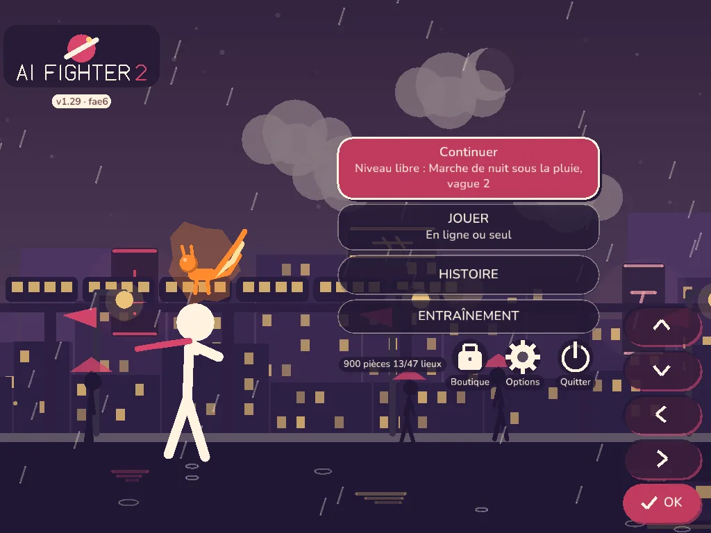
Variante C : une seule carte translucide
Un seul panneau creme a 86 % derrière tout le menu (boutons a l'ancienne, teintes d'encre), la ville visible autour. Plus calme, mais l'animation est plus masquee que dans A et B.
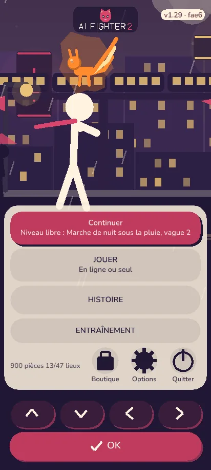
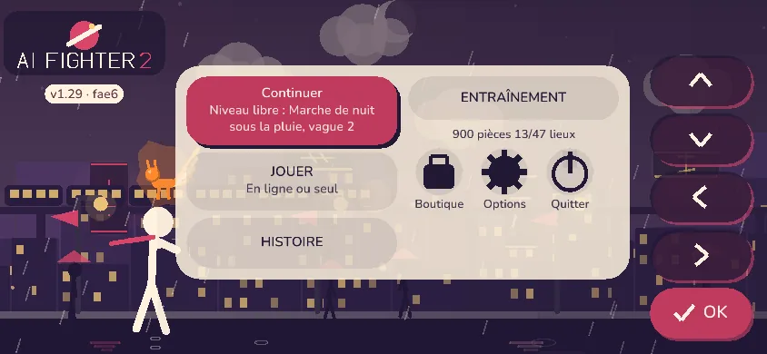
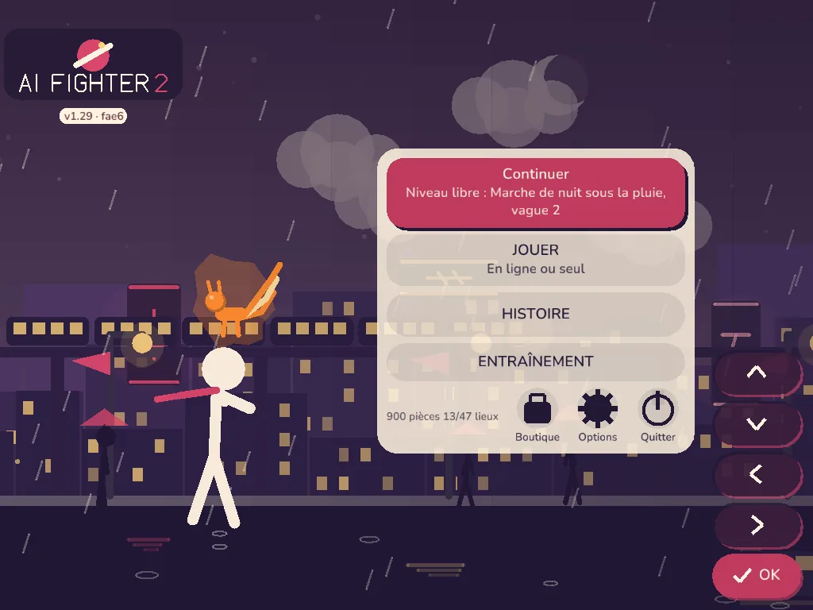
Autres formats (variante A)
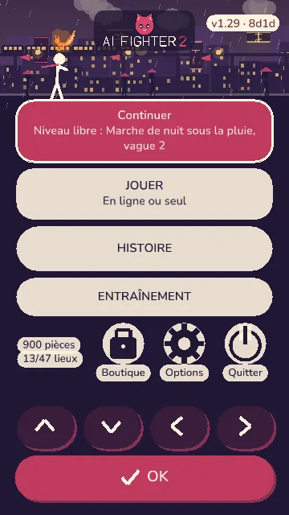
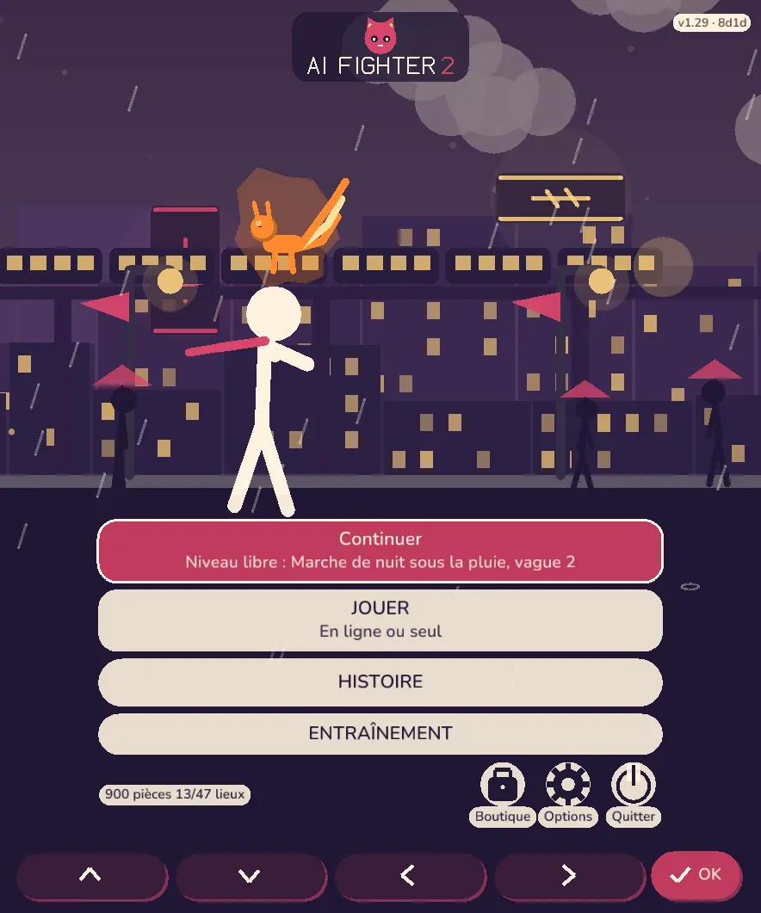
Ce que ca garantit
- Texte : encre sur creme a 90 % (ou creme sur encre a 78 %), jamais sur la ville nue ; les petites lignes (stats, legendes) ont leur pastille.
- Budget : décor + menu = aplats et triangles, aucune allocation par image, aucun flou ni shader. Réglage Effets « Minimaux » : décor immobile.
- Responsive : portrait (menu en bas, le héros se glisse au-dessus), paysage et tablette (menu en colonne a droite, logo et héros a gauche), sous-menus sur le même principe.
- Hierarchie, actions, ordre clavier / manette et cibles tactiles inchanges.
Votre choix
Quelle variante garder ? A est en place par defaut.